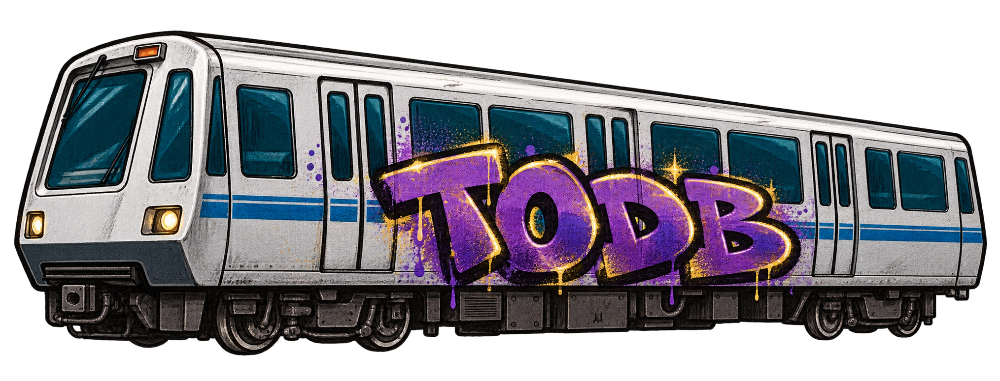

BART
SYNTH
TODB / TWONONDABEAT · S.O.N PRODUCTIONS
b
a
BART
? Guide
FACTORY 001 / 100
FUNKY BASS
0 VOICES
—
◀
▶
⚄ New sound
Save
Load
Main
Osc
FX
Motion
THE BAY / SOUND IN MOTION
YELLOW · ATTACK
RED · DECAY
BLUE · SUSTAIN
GREEN · RELEASE
ORANGE · FILTER
▶ Route
■ Panic
Tempo
● Record
Save WAV
Amp
Filter
Pitch
Mod
ride the rails.
shape the sound.
MIDI / PIANO ROLL
A W S E D F T G Y H U J K
Octave
×